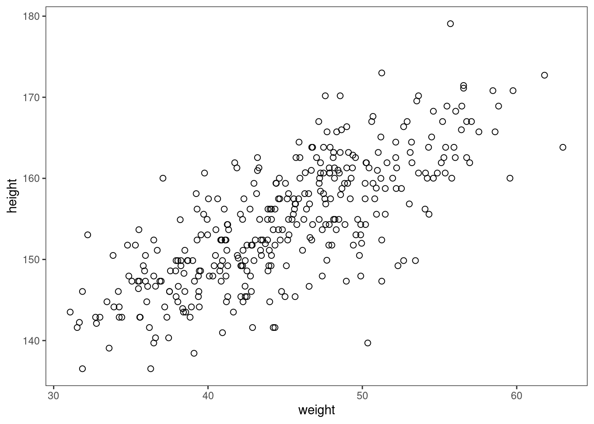
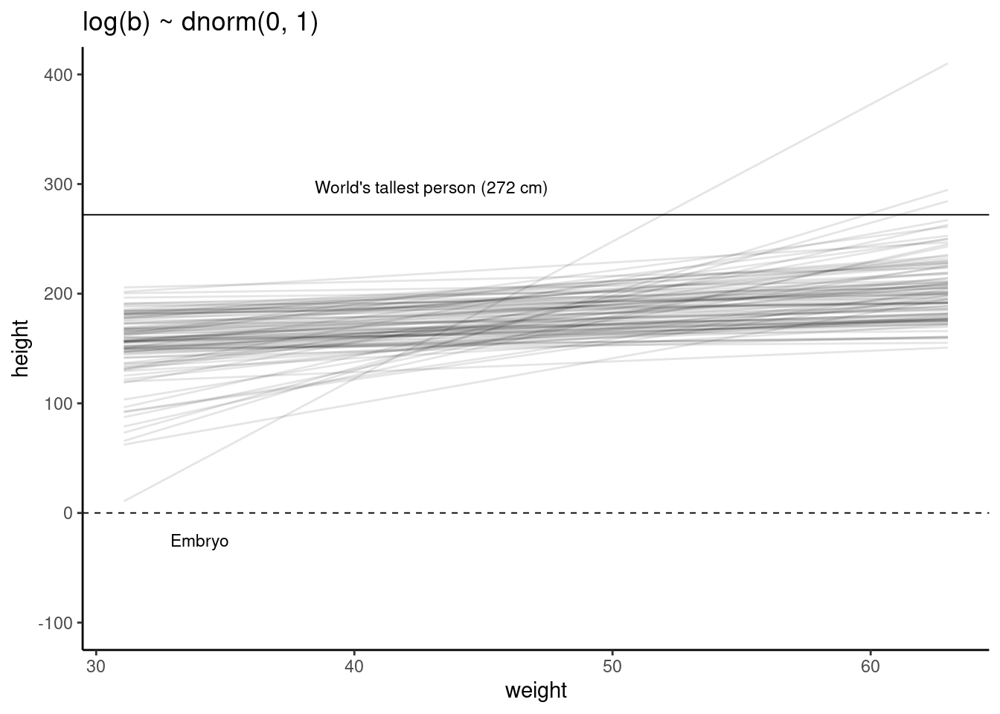
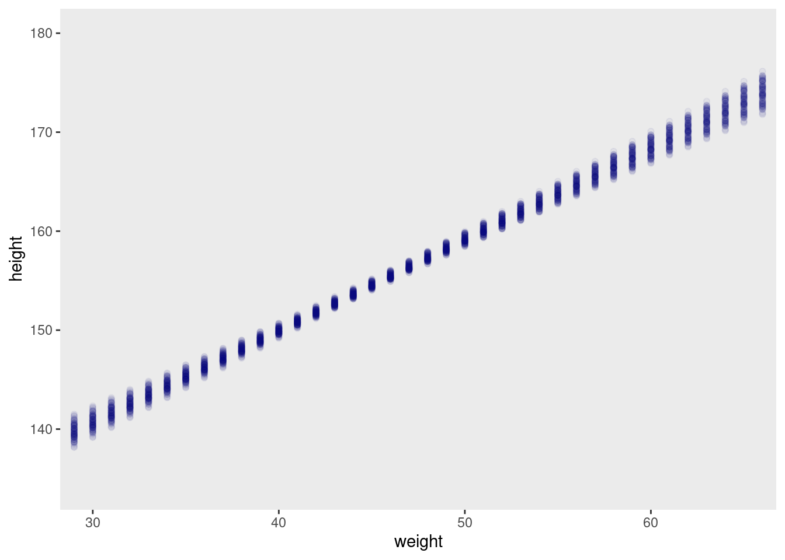

<!DOCTYPE html>
<html lang="" xml:lang="">
<head>

<meta charset="utf-8" />
<meta name="generator" content="pandoc" />
<meta name="viewport" content="width=device-width, initial-scale=1" />
<meta property="og:title" content="1.4 Linear prediction | Chapter 4. Geocentric Models" />
<meta property="og:type" content="book" />


<meta name="date" content="2021-05-12" />

<script type="text/x-mathjax-config">
MathJax.Hub.Config({
  TeX: { equationNumbers: { autoNumber: "AMS" } }
});
</script>
  <script src="https://cdn.jsdelivr.net/npm/mathjax@3/es5/tex-chtml-full.js" type="text/javascript"></script>

<meta name="description" content="1.4 Linear prediction | Chapter 4. Geocentric Models">

<title>1.4 Linear prediction | Chapter 4. Geocentric Models</title>

<script src="libs/header-attrs-2.8/header-attrs.js"></script>
<link href="libs/tufte-css-2015.12.29/tufte-fonts.css" rel="stylesheet" />
<link href="libs/tufte-css-2015.12.29/tufte-background.css" rel="stylesheet" />
<link href="libs/tufte-css-2015.12.29/tufte-italics.css" rel="stylesheet" />
<link href="libs/tufte-css-2015.12.29/tufte.css" rel="stylesheet" />


<style type="text/css">code{white-space: pre;}</style>
<style type="text/css">
pre > code.sourceCode { white-space: pre; position: relative; }
pre > code.sourceCode > span { display: inline-block; line-height: 1.25; }
pre > code.sourceCode > span:empty { height: 1.2em; }
.sourceCode { overflow: visible; }
code.sourceCode > span { color: inherit; text-decoration: inherit; }
div.sourceCode { margin: 1em 0; }
pre.sourceCode { margin: 0; }
@media screen {
div.sourceCode { overflow: auto; }
}
@media print {
pre > code.sourceCode { white-space: pre-wrap; }
pre > code.sourceCode > span { text-indent: -5em; padding-left: 5em; }
}
pre.numberSource code
  { counter-reset: source-line 0; }
pre.numberSource code > span
  { position: relative; left: -4em; counter-increment: source-line; }
pre.numberSource code > span > a:first-child::before
  { content: counter(source-line);
    position: relative; left: -1em; text-align: right; vertical-align: baseline;
    border: none; display: inline-block;
    -webkit-touch-callout: none; -webkit-user-select: none;
    -khtml-user-select: none; -moz-user-select: none;
    -ms-user-select: none; user-select: none;
    padding: 0 4px; width: 4em;
    color: #aaaaaa;
  }
pre.numberSource { margin-left: 3em; border-left: 1px solid #aaaaaa;  padding-left: 4px; }
div.sourceCode
  {   }
@media screen {
pre > code.sourceCode > span > a:first-child::before { text-decoration: underline; }
}
code span.al { color: #ff0000; font-weight: bold; } /* Alert */
code span.an { color: #60a0b0; font-weight: bold; font-style: italic; } /* Annotation */
code span.at { color: #7d9029; } /* Attribute */
code span.bn { color: #40a070; } /* BaseN */
code span.bu { } /* BuiltIn */
code span.cf { color: #007020; font-weight: bold; } /* ControlFlow */
code span.ch { color: #4070a0; } /* Char */
code span.cn { color: #880000; } /* Constant */
code span.co { color: #60a0b0; font-style: italic; } /* Comment */
code span.cv { color: #60a0b0; font-weight: bold; font-style: italic; } /* CommentVar */
code span.do { color: #ba2121; font-style: italic; } /* Documentation */
code span.dt { color: #902000; } /* DataType */
code span.dv { color: #40a070; } /* DecVal */
code span.er { color: #ff0000; font-weight: bold; } /* Error */
code span.ex { } /* Extension */
code span.fl { color: #40a070; } /* Float */
code span.fu { color: #06287e; } /* Function */
code span.im { } /* Import */
code span.in { color: #60a0b0; font-weight: bold; font-style: italic; } /* Information */
code span.kw { color: #007020; font-weight: bold; } /* Keyword */
code span.op { color: #666666; } /* Operator */
code span.ot { color: #007020; } /* Other */
code span.pp { color: #bc7a00; } /* Preprocessor */
code span.sc { color: #4070a0; } /* SpecialChar */
code span.ss { color: #bb6688; } /* SpecialString */
code span.st { color: #4070a0; } /* String */
code span.va { color: #19177c; } /* Variable */
code span.vs { color: #4070a0; } /* VerbatimString */
code span.wa { color: #60a0b0; font-weight: bold; font-style: italic; } /* Warning */
</style>


<link rel="stylesheet" href="toc.css" type="text/css" />

</head>

<body>


<div class="row">
<div class="col-sm-12">
<div id="TOC">
<ul>
<li><a href="1-geocentric-models.html#geocentric-models"><span class="toc-section-number">1</span> Geocentric Models</a>
<ul>
<li><a href="1-1-why-normal-distributions-are-normal.html#why-normal-distributions-are-normal"><span class="toc-section-number">1.1</span> Why normal distributions are normal</a>
<ul>
<li><a href="1-1-why-normal-distributions-are-normal.html#normal-by-addition"><span class="toc-section-number">1.1.1</span> Normal by addition</a></li>
<li><a href="1-1-why-normal-distributions-are-normal.html#normal-by-multiplication"><span class="toc-section-number">1.1.2</span> Normal by multiplication</a></li>
<li><a href="1-1-why-normal-distributions-are-normal.html#normal-by-log-multiplication"><span class="toc-section-number">1.1.3</span> Normal by log-multiplication</a></li>
<li><a href="1-1-why-normal-distributions-are-normal.html#using-gaussian-distributions"><span class="toc-section-number">1.1.4</span> Using Gaussian distributions</a></li>
</ul></li>
<li><a href="1-2-a-language-for-describing-models.html#a-language-for-describing-models"><span class="toc-section-number">1.2</span> A language for describing models</a>
<ul>
<li><a href="1-2-a-language-for-describing-models.html#re-describing-the-glob-tossing-model"><span class="toc-section-number">1.2.1</span> Re-describing the glob tossing model</a></li>
</ul></li>
<li><a href="1-3-gaussian-model-of-height.html#gaussian-model-of-height"><span class="toc-section-number">1.3</span> Gaussian model of height</a>
<ul>
<li><a href="1-3-gaussian-model-of-height.html#the-data"><span class="toc-section-number">1.3.1</span> The data</a></li>
<li><a href="1-3-gaussian-model-of-height.html#the-model"><span class="toc-section-number">1.3.2</span> The model</a></li>
<li><a href="1-3-gaussian-model-of-height.html#grid-approximation-of-the-posterior-distribution"><span class="toc-section-number">1.3.3</span> Grid approximation of the posterior distribution</a></li>
<li><a href="1-3-gaussian-model-of-height.html#sampling-from-the-posterior"><span class="toc-section-number">1.3.4</span> Sampling from the posterior</a></li>
<li><a href="1-3-gaussian-model-of-height.html#finding-the-posterior-distribution-with-quap"><span class="toc-section-number">1.3.5</span> Finding the posterior distribution with <code>quap</code></a></li>
<li><a href="1-3-gaussian-model-of-height.html#sampling-from-a-quap"><span class="toc-section-number">1.3.6</span> Sampling from a <code>quap</code></a></li>
</ul></li>
<li><a href="1-4-linear-prediction.html#linear-prediction"><span class="toc-section-number">1.4</span> Linear prediction</a>
<ul>
<li><a href="1-4-linear-prediction.html#the-linear-model-strategy"><span class="toc-section-number">1.4.1</span> The linear model strategy</a></li>
<li><a href="1-4-linear-prediction.html#finding-the-posterior-distribution"><span class="toc-section-number">1.4.2</span> Finding the posterior distribution</a></li>
<li><a href="1-4-linear-prediction.html#interpreting-the-posterior-distribution"><span class="toc-section-number">1.4.3</span> Interpreting the posterior distribution</a></li>
</ul></li>
</ul></li>
</ul>
</div>
</div>
</div>
<div class="row">
<div class="col-sm-12">
<div id="linear-prediction" class="section level2" number="1.4">
<h2><span class="header-section-number">1.4</span> Linear prediction</h2>
<p>Let’s look at how height in these Kalahari foragers covaries with weight.</p>
<p></p>
<div class="sourceCode" id="cb56"><pre class="sourceCode r"><code class="sourceCode r"><span id="cb56-1"><a href="1-4-linear-prediction.html#cb56-1" aria-hidden="true" tabindex="-1"></a><span class="fu">data</span>(Howell1); d <span class="ot">&lt;-</span> Howell1; d2 <span class="ot">&lt;-</span> d[ d<span class="sc">$</span>age <span class="sc">&gt;=</span> <span class="dv">18</span> , ]</span>
<span id="cb56-2"><a href="1-4-linear-prediction.html#cb56-2" aria-hidden="true" tabindex="-1"></a><span class="fu">plot</span>( d2<span class="sc">$</span>height <span class="sc">~</span> d2<span class="sc">$</span>weight )</span></code></pre></div>
<p></p>
<p>So now let’s add a line. When we learn the predictions, we can learn the statistical association between weight and height. The question is how would you statistically describe this relationship?</p>
<div id="the-linear-model-strategy" class="section level3" number="1.4.1">
<h3><span class="header-section-number">1.4.1</span> The linear model strategy</h3>
<div class="figure"><span id="fig:unnamed-chunk-44"></span>
<p class="caption marginnote shownote">
Figure 1.30: So what do we do? We add another variable to the model, and now we have a linear regression. This model has all the standard features. Now there’s an <span class="math inline">\(i\)</span> on <span class="math inline">\(mu\)</span>. That means it’s different for each person. <span class="math inline">\(alpha\)</span> is out population mean. <span class="math inline">\(beta\)</span> describes the relationship between <span class="math inline">\(x\)</span> and <span class="math inline">\(y\)</span>.
</p>

</div>
<div class="figure"><span id="fig:unnamed-chunk-45"></span>
<p class="caption marginnote shownote">
Figure 1.31: The equals sign mean that it’s deterministically defined. <span class="math inline">\(beta\)</span> is what you’d call a slope, or the rate of change in <span class="math inline">\(mu\)</span> for a unit change in <span class="math inline">\(x\)</span>. Why do we subtract x bar? This is called centering the predictor. Should be your default behaviour.
</p>

</div>
<div class="figure"><span id="fig:unnamed-chunk-46"></span>
<p class="caption marginnote shownote">
Figure 1.32: It’s now predicting lines. So what does the prior predictive distribution look like? A whole lot of lines.
</p>

</div>
<p></p>
<div class="sourceCode" id="cb57"><pre class="sourceCode r"><code class="sourceCode r"><span id="cb57-1"><a href="1-4-linear-prediction.html#cb57-1" aria-hidden="true" tabindex="-1"></a><span class="fu">set.seed</span>(<span class="dv">2971</span>)</span>
<span id="cb57-2"><a href="1-4-linear-prediction.html#cb57-2" aria-hidden="true" tabindex="-1"></a>N <span class="ot">=</span> <span class="dv">100</span> <span class="co"># 100 lines</span></span>
<span id="cb57-3"><a href="1-4-linear-prediction.html#cb57-3" aria-hidden="true" tabindex="-1"></a>a <span class="ot">=</span> <span class="fu">rnorm</span>(N, <span class="dv">178</span>, <span class="dv">20</span>)</span>
<span id="cb57-4"><a href="1-4-linear-prediction.html#cb57-4" aria-hidden="true" tabindex="-1"></a>b <span class="ot">=</span> <span class="fu">rnorm</span>(N, <span class="dv">0</span>, <span class="dv">10</span>)</span></code></pre></div>
<p>Now we have 100 paris of <span class="math inline">\(\alpha\)</span> and <span class="math inline">\(\beta\)</span> values.</p>
<p>Simulate 100 lines as before.</p>
<p></p>
<p>
<span class="marginnote shownote">
<!--
<div class="figure">-->

<!--
<p class="caption marginnote">--> <!--</p>-->
<!--</div>--></span>
</p>
<div class="sourceCode" id="cb58"><pre class="sourceCode r"><code class="sourceCode r"><span id="cb58-1"><a href="1-4-linear-prediction.html#cb58-1" aria-hidden="true" tabindex="-1"></a><span class="fu">plot</span>( <span class="cn">NULL</span> , <span class="at">xlim=</span><span class="fu">range</span>(d2<span class="sc">$</span>weight) , <span class="at">ylim=</span><span class="fu">c</span>(<span class="sc">-</span><span class="dv">100</span>,<span class="dv">400</span>), <span class="at">xlab=</span><span class="st">&quot;weight&quot;</span> , <span class="at">ylab=</span><span class="st">&quot;height&quot;</span> )</span>
<span id="cb58-2"><a href="1-4-linear-prediction.html#cb58-2" aria-hidden="true" tabindex="-1"></a><span class="fu">abline</span>( <span class="at">h=</span><span class="dv">0</span> , <span class="at">lty=</span><span class="dv">2</span> )</span>
<span id="cb58-3"><a href="1-4-linear-prediction.html#cb58-3" aria-hidden="true" tabindex="-1"></a><span class="fu">abline</span>( <span class="at">h=</span><span class="dv">272</span> , <span class="at">lty=</span><span class="dv">1</span> , <span class="at">lwd=</span><span class="fl">0.5</span> )</span>
<span id="cb58-4"><a href="1-4-linear-prediction.html#cb58-4" aria-hidden="true" tabindex="-1"></a><span class="fu">mtext</span>( <span class="st">&quot;b ~ dnorm(0,10)&quot;</span> )</span>
<span id="cb58-5"><a href="1-4-linear-prediction.html#cb58-5" aria-hidden="true" tabindex="-1"></a>xbar <span class="ot">&lt;-</span> <span class="fu">mean</span>(d2<span class="sc">$</span>weight)</span>
<span id="cb58-6"><a href="1-4-linear-prediction.html#cb58-6" aria-hidden="true" tabindex="-1"></a><span class="cf">for</span> ( i <span class="cf">in</span> <span class="dv">1</span><span class="sc">:</span>N ) <span class="fu">curve</span>( a[i] <span class="sc">+</span> b[i]<span class="sc">*</span>(x <span class="sc">-</span> xbar),</span>
<span id="cb58-7"><a href="1-4-linear-prediction.html#cb58-7" aria-hidden="true" tabindex="-1"></a>                        <span class="at">from=</span><span class="fu">min</span>(d2<span class="sc">$</span>weight) ,</span>
<span id="cb58-8"><a href="1-4-linear-prediction.html#cb58-8" aria-hidden="true" tabindex="-1"></a>                        <span class="at">to=</span><span class="fu">max</span>(d2<span class="sc">$</span>weight) , <span class="at">add=</span><span class="cn">TRUE</span> ,</span>
<span id="cb58-9"><a href="1-4-linear-prediction.html#cb58-9" aria-hidden="true" tabindex="-1"></a>                        <span class="at">col=</span><span class="fu">col.alpha</span>(<span class="st">&quot;black&quot;</span>,<span class="fl">0.2</span>) )</span></code></pre></div>
<p>Getting the scatter right is important, because you can see these impossibly steep lines. Some of them take you from impossibly short individuals to twice the tallest. Want to dampen these expectations. Practise on these safe examples.</p>
<div class="figure"><span id="fig:unnamed-chunk-49"></span>
<p class="caption marginnote shownote">
Figure 1.33: We know that <span class="math inline">\(beta\)</span> is positive, so let’s make it positive. A log normal distribution is a normal distribution logged. What’s nice is that they’re all positive. We want to assume the relationship between weight and height is positive.
</p>

</div>
<p>
<span class="marginnote shownote">
<!--
<div class="figure">-->

<!--
<p class="caption marginnote">--> <!--</p>-->
<!--</div>--></span>
</p>
<div class="sourceCode" id="cb59"><pre class="sourceCode r"><code class="sourceCode r"><span id="cb59-1"><a href="1-4-linear-prediction.html#cb59-1" aria-hidden="true" tabindex="-1"></a>b <span class="ot">=</span> <span class="fu">rlnorm</span>(<span class="fl">1e4</span>, <span class="dv">0</span>, <span class="dv">1</span>)</span>
<span id="cb59-2"><a href="1-4-linear-prediction.html#cb59-2" aria-hidden="true" tabindex="-1"></a>rethinking<span class="sc">::</span><span class="fu">dens</span>(b, <span class="at">xlim =</span> <span class="fu">c</span>(<span class="dv">0</span>,<span class="dv">5</span>), <span class="at">adj =</span> <span class="fl">0.1</span>)</span></code></pre></div>
<p></p>
<p>Still a lot of scatter, but still one crazy line. Now at least we’re in the possible range.</p>
<div class="sourceCode" id="cb60"><pre class="sourceCode r"><code class="sourceCode r"><span id="cb60-1"><a href="1-4-linear-prediction.html#cb60-1" aria-hidden="true" tabindex="-1"></a><span class="fu">set.seed</span>(<span class="dv">2971</span>)</span>
<span id="cb60-2"><a href="1-4-linear-prediction.html#cb60-2" aria-hidden="true" tabindex="-1"></a>N <span class="ot">&lt;-</span> <span class="dv">100</span> <span class="co"># 100 lines</span></span>
<span id="cb60-3"><a href="1-4-linear-prediction.html#cb60-3" aria-hidden="true" tabindex="-1"></a>a <span class="ot">&lt;-</span> <span class="fu">rnorm</span>( N , <span class="dv">178</span> , <span class="dv">20</span> )</span>
<span id="cb60-4"><a href="1-4-linear-prediction.html#cb60-4" aria-hidden="true" tabindex="-1"></a>b <span class="ot">&lt;-</span> <span class="fu">rlnorm</span>( N , <span class="dv">0</span> , <span class="dv">1</span> )</span>
<span id="cb60-5"><a href="1-4-linear-prediction.html#cb60-5" aria-hidden="true" tabindex="-1"></a></span>
<span id="cb60-6"><a href="1-4-linear-prediction.html#cb60-6" aria-hidden="true" tabindex="-1"></a><span class="fu">plot</span>( <span class="cn">NULL</span> , <span class="at">xlim=</span><span class="fu">range</span>(d2<span class="sc">$</span>weight) , <span class="at">ylim=</span><span class="fu">c</span>(<span class="sc">-</span><span class="dv">100</span>,<span class="dv">400</span>), <span class="at">xlab=</span><span class="st">&quot;weight&quot;</span> , <span class="at">ylab=</span><span class="st">&quot;height&quot;</span> )</span>
<span id="cb60-7"><a href="1-4-linear-prediction.html#cb60-7" aria-hidden="true" tabindex="-1"></a><span class="fu">abline</span>( <span class="at">h=</span><span class="dv">0</span> , <span class="at">lty=</span><span class="dv">2</span> )</span>
<span id="cb60-8"><a href="1-4-linear-prediction.html#cb60-8" aria-hidden="true" tabindex="-1"></a><span class="fu">abline</span>( <span class="at">h=</span><span class="dv">272</span> , <span class="at">lty=</span><span class="dv">1</span> , <span class="at">lwd=</span><span class="fl">0.5</span> )</span>
<span id="cb60-9"><a href="1-4-linear-prediction.html#cb60-9" aria-hidden="true" tabindex="-1"></a><span class="fu">mtext</span>( <span class="st">&quot;b ~ dnorm(0,10)&quot;</span> )</span>
<span id="cb60-10"><a href="1-4-linear-prediction.html#cb60-10" aria-hidden="true" tabindex="-1"></a>xbar <span class="ot">&lt;-</span> <span class="fu">mean</span>(d2<span class="sc">$</span>weight)</span>
<span id="cb60-11"><a href="1-4-linear-prediction.html#cb60-11" aria-hidden="true" tabindex="-1"></a><span class="cf">for</span> ( i <span class="cf">in</span> <span class="dv">1</span><span class="sc">:</span>N ) <span class="fu">curve</span>( a[i] <span class="sc">+</span> b[i]<span class="sc">*</span>(x <span class="sc">-</span> xbar),</span>
<span id="cb60-12"><a href="1-4-linear-prediction.html#cb60-12" aria-hidden="true" tabindex="-1"></a>                        <span class="at">from=</span><span class="fu">min</span>(d2<span class="sc">$</span>weight) ,</span>
<span id="cb60-13"><a href="1-4-linear-prediction.html#cb60-13" aria-hidden="true" tabindex="-1"></a>                        <span class="at">to=</span><span class="fu">max</span>(d2<span class="sc">$</span>weight) , <span class="at">add=</span><span class="cn">TRUE</span> ,</span>
<span id="cb60-14"><a href="1-4-linear-prediction.html#cb60-14" aria-hidden="true" tabindex="-1"></a>                        <span class="at">col=</span><span class="fu">col.alpha</span>(<span class="st">&quot;black&quot;</span>,<span class="fl">0.2</span>) )</span></code></pre></div>
<p></p>
<blockquote>
<p>How to choose a prior? The procedure we’ve performed in this chapter is to choose priors conditional on pre-data knowledge of the variables - their constraints, ranges, and theoretical relationships.</p>
</blockquote>
</div>
<div id="finding-the-posterior-distribution" class="section level3" number="1.4.2">
<h3><span class="header-section-number">1.4.2</span> Finding the posterior distribution</h3>
<div class="figure"><span id="fig:unnamed-chunk-51"></span>
<p class="caption marginnote shownote">
Figure 1.34: Measure xbar. Then define the <code>quap</code> model. Focus on the <span class="math inline">\(mu\)</span> line.
</p>

</div>
<div class="sourceCode" id="cb61"><pre class="sourceCode r"><code class="sourceCode r"><span id="cb61-1"><a href="1-4-linear-prediction.html#cb61-1" aria-hidden="true" tabindex="-1"></a><span class="co"># load data again, since it&#39;s a long way back</span></span>
<span id="cb61-2"><a href="1-4-linear-prediction.html#cb61-2" aria-hidden="true" tabindex="-1"></a><span class="fu">data</span>(Howell1); d <span class="ot">&lt;-</span> Howell1; d2 <span class="ot">&lt;-</span> d[ d<span class="sc">$</span>age <span class="sc">&gt;=</span> <span class="dv">18</span> , ]</span>
<span id="cb61-3"><a href="1-4-linear-prediction.html#cb61-3" aria-hidden="true" tabindex="-1"></a><span class="co"># define the average weight, x-bar</span></span>
<span id="cb61-4"><a href="1-4-linear-prediction.html#cb61-4" aria-hidden="true" tabindex="-1"></a>xbar <span class="ot">&lt;-</span> <span class="fu">mean</span>(d2<span class="sc">$</span>weight)</span>
<span id="cb61-5"><a href="1-4-linear-prediction.html#cb61-5" aria-hidden="true" tabindex="-1"></a><span class="co"># fit model</span></span>
<span id="cb61-6"><a href="1-4-linear-prediction.html#cb61-6" aria-hidden="true" tabindex="-1"></a>m4<span class="fl">.3</span> <span class="ot">&lt;-</span> <span class="fu">quap</span>(</span>
<span id="cb61-7"><a href="1-4-linear-prediction.html#cb61-7" aria-hidden="true" tabindex="-1"></a>  <span class="fu">alist</span>(</span>
<span id="cb61-8"><a href="1-4-linear-prediction.html#cb61-8" aria-hidden="true" tabindex="-1"></a>    height <span class="sc">~</span> <span class="fu">dnorm</span>( mu , sigma ) ,</span>
<span id="cb61-9"><a href="1-4-linear-prediction.html#cb61-9" aria-hidden="true" tabindex="-1"></a>    mu <span class="ot">&lt;-</span> a <span class="sc">+</span> b<span class="sc">*</span>( weight <span class="sc">-</span> xbar ) ,</span>
<span id="cb61-10"><a href="1-4-linear-prediction.html#cb61-10" aria-hidden="true" tabindex="-1"></a>    a <span class="sc">~</span> <span class="fu">dnorm</span>( <span class="dv">178</span> , <span class="dv">20</span> ) ,</span>
<span id="cb61-11"><a href="1-4-linear-prediction.html#cb61-11" aria-hidden="true" tabindex="-1"></a>    b <span class="sc">~</span> <span class="fu">dlnorm</span>( <span class="dv">0</span> , <span class="dv">1</span> ) ,</span>
<span id="cb61-12"><a href="1-4-linear-prediction.html#cb61-12" aria-hidden="true" tabindex="-1"></a>    sigma <span class="sc">~</span> <span class="fu">dunif</span>( <span class="dv">0</span> , <span class="dv">50</span> )</span>
<span id="cb61-13"><a href="1-4-linear-prediction.html#cb61-13" aria-hidden="true" tabindex="-1"></a>  ) , <span class="at">data=</span>d2 )</span></code></pre></div>
<div class="sourceCode" id="cb62"><pre class="sourceCode r"><code class="sourceCode r"><span id="cb62-1"><a href="1-4-linear-prediction.html#cb62-1" aria-hidden="true" tabindex="-1"></a>m4<span class="fl">.3</span>b <span class="ot">&lt;-</span> <span class="fu">quap</span>(</span>
<span id="cb62-2"><a href="1-4-linear-prediction.html#cb62-2" aria-hidden="true" tabindex="-1"></a>  <span class="fu">alist</span>(</span>
<span id="cb62-3"><a href="1-4-linear-prediction.html#cb62-3" aria-hidden="true" tabindex="-1"></a>    height <span class="sc">~</span> <span class="fu">dnorm</span>( mu , sigma ) ,</span>
<span id="cb62-4"><a href="1-4-linear-prediction.html#cb62-4" aria-hidden="true" tabindex="-1"></a>    mu <span class="ot">&lt;-</span> a <span class="sc">+</span> <span class="fu">exp</span>(log_b)<span class="sc">*</span>( weight <span class="sc">-</span> xbar ),</span>
<span id="cb62-5"><a href="1-4-linear-prediction.html#cb62-5" aria-hidden="true" tabindex="-1"></a>    a <span class="sc">~</span> <span class="fu">dnorm</span>( <span class="dv">178</span> , <span class="dv">20</span> ) ,</span>
<span id="cb62-6"><a href="1-4-linear-prediction.html#cb62-6" aria-hidden="true" tabindex="-1"></a>    log_b <span class="sc">~</span> <span class="fu">dnorm</span>( <span class="dv">0</span> , <span class="dv">1</span>),</span>
<span id="cb62-7"><a href="1-4-linear-prediction.html#cb62-7" aria-hidden="true" tabindex="-1"></a>    sigma <span class="sc">~</span> <span class="fu">dunif</span>( <span class="dv">0</span> , <span class="dv">50</span> )</span>
<span id="cb62-8"><a href="1-4-linear-prediction.html#cb62-8" aria-hidden="true" tabindex="-1"></a>  ) , <span class="at">data=</span>d2 )</span></code></pre></div>
</div>
<div id="interpreting-the-posterior-distribution" class="section level3" number="1.4.3">
<h3><span class="header-section-number">1.4.3</span> Interpreting the posterior distribution</h3>
<div class="sourceCode" id="cb63"><pre class="sourceCode r"><code class="sourceCode r"><span id="cb63-1"><a href="1-4-linear-prediction.html#cb63-1" aria-hidden="true" tabindex="-1"></a><span class="fu">precis</span>(m4<span class="fl">.3</span>)</span></code></pre></div>
<pre><code>##              mean         sd        5.5%       94.5%
## a     154.6013671 0.27030766 154.1693633 155.0333710
## b       0.9032807 0.04192363   0.8362787   0.9702828
## sigma   5.0718809 0.19115478   4.7663786   5.3773831</code></pre>
<p>See the covariances:</p>
<div class="sourceCode" id="cb65"><pre class="sourceCode r"><code class="sourceCode r"><span id="cb65-1"><a href="1-4-linear-prediction.html#cb65-1" aria-hidden="true" tabindex="-1"></a><span class="fu">round</span>(rethinking<span class="sc">::</span><span class="fu">vcov</span>(m4<span class="fl">.3</span>), <span class="dv">3</span>)</span></code></pre></div>
<pre><code>##           a     b sigma
## a     0.073 0.000 0.000
## b     0.000 0.002 0.000
## sigma 0.000 0.000 0.037</code></pre>
<p>Very little covariation among the parameters in this case.</p>
<div class="sourceCode" id="cb67"><pre class="sourceCode r"><code class="sourceCode r"><span id="cb67-1"><a href="1-4-linear-prediction.html#cb67-1" aria-hidden="true" tabindex="-1"></a><span class="co"># Show both the marginal posteriors and the covariance</span></span>
<span id="cb67-2"><a href="1-4-linear-prediction.html#cb67-2" aria-hidden="true" tabindex="-1"></a><span class="fu">pairs</span>(m4<span class="fl">.3</span>)</span></code></pre></div>
<p>
In the practice problems at the end of the chapter, you’ll see that the lack of covariance among the parameters results from <strong>Centering</strong>.</p>
<p>Plot the data with the posterior mean values for <code>a</code> and <code>b</code>:</p>
<p>
<span class="marginnote shownote">
<!--
<div class="figure">-->

<!--
<p class="caption marginnote">--> <!--</p>-->
<!--</div>--></span>
</p>
<div class="sourceCode" id="cb68"><pre class="sourceCode r"><code class="sourceCode r"><span id="cb68-1"><a href="1-4-linear-prediction.html#cb68-1" aria-hidden="true" tabindex="-1"></a><span class="fu">plot</span>( height <span class="sc">~</span> weight , <span class="at">data=</span>d2 , <span class="at">col=</span>rangi2 )</span>
<span id="cb68-2"><a href="1-4-linear-prediction.html#cb68-2" aria-hidden="true" tabindex="-1"></a>post <span class="ot">&lt;-</span> <span class="fu">extract.samples</span>( m4<span class="fl">.3</span> )</span>
<span id="cb68-3"><a href="1-4-linear-prediction.html#cb68-3" aria-hidden="true" tabindex="-1"></a>a_map <span class="ot">&lt;-</span> <span class="fu">mean</span>(post<span class="sc">$</span>a)</span>
<span id="cb68-4"><a href="1-4-linear-prediction.html#cb68-4" aria-hidden="true" tabindex="-1"></a>b_map <span class="ot">&lt;-</span> <span class="fu">mean</span>(post<span class="sc">$</span>b)</span>
<span id="cb68-5"><a href="1-4-linear-prediction.html#cb68-5" aria-hidden="true" tabindex="-1"></a><span class="fu">curve</span>( a_map <span class="sc">+</span> b_map<span class="sc">*</span>(x <span class="sc">-</span> xbar) , <span class="at">add=</span><span class="cn">TRUE</span> )</span></code></pre></div>
<div class="figure"><span id="fig:unnamed-chunk-53"></span>
<p class="caption marginnote shownote">
Figure 1.35: We managed to get this posterior distribution, and we can take from the precis values the <code>a</code> and <code>b</code>b values and draw a line with those, where <code>a</code> is the expected value of height (155) when weight is at its average value. And the expected change in height is nearly 1. But the posterior distribution is not a single line, it’s an infinite number of lines each with a probability. So let’s get more lines on the graph to show the uncertainty in inference.
</p>

</div>
<div class="figure"><span id="fig:unnamed-chunk-54"></span>
<p class="caption marginnote shownote">
Figure 1.36: Here’s the basic idea. We’re going to sample from the posterior distribution. But what’s great is that you can use this process for any model you ever want to fit. You can sample from the posterior, then push the samples back through the model itself to plot the uncertainty.
</p>

</div>
<div class="figure"><span id="fig:unnamed-chunk-55"></span>
<p class="caption marginnote shownote">
Figure 1.37: You’re doing calculus here, but just doesn’t feel like it. Each row is a line. Lines that are more plausible have more ways to happen, so they’re overlap more in the areas that are more plausible.
</p>

</div>
<div class="sourceCode" id="cb69"><pre class="sourceCode r"><code class="sourceCode r"><span id="cb69-1"><a href="1-4-linear-prediction.html#cb69-1" aria-hidden="true" tabindex="-1"></a>post <span class="ot">=</span> rethinking<span class="sc">::</span><span class="fu">extract.samples</span>(m4<span class="fl">.3</span>)</span>
<span id="cb69-2"><a href="1-4-linear-prediction.html#cb69-2" aria-hidden="true" tabindex="-1"></a>post[<span class="dv">1</span><span class="sc">:</span><span class="dv">5</span>, ]</span></code></pre></div>
<pre><code>##          a         b    sigma
## 1 154.4622 0.9150822 5.341227
## 2 154.2649 0.9236067 5.160423
## 3 155.1258 0.9495934 5.108891
## 4 154.5923 0.8458252 4.994873
## 5 154.2600 0.9065280 5.110351</code></pre>
<div class="figure"><span id="fig:unnamed-chunk-56"></span>
<p class="caption marginnote shownote">
Figure 1.38: To see this work, and reinforce how Bayesian updating works, let’s start with a reduced dataset of 10 randomly sampled adults. We fit our linear regression model, and get a quadratic approximation of the posterior distribution. You’ll see they’re very different from the prior. Now they’re very concentrated around the data. You can see there’s a lot of scatter because the model isn’t sure where it should be.
</p>

</div>
<div class="sourceCode" id="cb71"><pre class="sourceCode r"><code class="sourceCode r"><span id="cb71-1"><a href="1-4-linear-prediction.html#cb71-1" aria-hidden="true" tabindex="-1"></a>N <span class="ot">&lt;-</span> <span class="dv">10</span></span>
<span id="cb71-2"><a href="1-4-linear-prediction.html#cb71-2" aria-hidden="true" tabindex="-1"></a>dN <span class="ot">&lt;-</span> d2[ <span class="dv">1</span><span class="sc">:</span>N , ]</span>
<span id="cb71-3"><a href="1-4-linear-prediction.html#cb71-3" aria-hidden="true" tabindex="-1"></a>mN <span class="ot">&lt;-</span> <span class="fu">quap</span>(</span>
<span id="cb71-4"><a href="1-4-linear-prediction.html#cb71-4" aria-hidden="true" tabindex="-1"></a>  <span class="fu">alist</span>(</span>
<span id="cb71-5"><a href="1-4-linear-prediction.html#cb71-5" aria-hidden="true" tabindex="-1"></a>    height <span class="sc">~</span> <span class="fu">dnorm</span>( mu , sigma ) ,</span>
<span id="cb71-6"><a href="1-4-linear-prediction.html#cb71-6" aria-hidden="true" tabindex="-1"></a>    mu <span class="ot">&lt;-</span> a <span class="sc">+</span> b<span class="sc">*</span>( weight <span class="sc">-</span> <span class="fu">mean</span>(weight) ) ,</span>
<span id="cb71-7"><a href="1-4-linear-prediction.html#cb71-7" aria-hidden="true" tabindex="-1"></a>    a <span class="sc">~</span> <span class="fu">dnorm</span>( <span class="dv">178</span> , <span class="dv">20</span> ) ,</span>
<span id="cb71-8"><a href="1-4-linear-prediction.html#cb71-8" aria-hidden="true" tabindex="-1"></a>    b <span class="sc">~</span> <span class="fu">dlnorm</span>( <span class="dv">0</span> , <span class="dv">1</span> ) ,</span>
<span id="cb71-9"><a href="1-4-linear-prediction.html#cb71-9" aria-hidden="true" tabindex="-1"></a>    sigma <span class="sc">~</span> <span class="fu">dunif</span>( <span class="dv">0</span> , <span class="dv">50</span> )</span>
<span id="cb71-10"><a href="1-4-linear-prediction.html#cb71-10" aria-hidden="true" tabindex="-1"></a>  ) , <span class="at">data=</span>dN )</span></code></pre></div>
<p>Now plot 20 of these lines:</p>
<p>
<span class="marginnote shownote">
<!--
<div class="figure">-->

<!--
<p class="caption marginnote">--> <!--</p>-->
<!--</div>--></span>
</p>
<div class="sourceCode" id="cb72"><pre class="sourceCode r"><code class="sourceCode r"><span id="cb72-1"><a href="1-4-linear-prediction.html#cb72-1" aria-hidden="true" tabindex="-1"></a><span class="co"># extract 20 samples from the posterior</span></span>
<span id="cb72-2"><a href="1-4-linear-prediction.html#cb72-2" aria-hidden="true" tabindex="-1"></a>post <span class="ot">&lt;-</span> <span class="fu">extract.samples</span>( mN , <span class="at">n=</span><span class="dv">20</span> )</span>
<span id="cb72-3"><a href="1-4-linear-prediction.html#cb72-3" aria-hidden="true" tabindex="-1"></a></span>
<span id="cb72-4"><a href="1-4-linear-prediction.html#cb72-4" aria-hidden="true" tabindex="-1"></a><span class="co"># display raw data and sample size</span></span>
<span id="cb72-5"><a href="1-4-linear-prediction.html#cb72-5" aria-hidden="true" tabindex="-1"></a><span class="fu">plot</span>( dN<span class="sc">$</span>weight , dN<span class="sc">$</span>height ,</span>
<span id="cb72-6"><a href="1-4-linear-prediction.html#cb72-6" aria-hidden="true" tabindex="-1"></a>  <span class="at">xlim=</span><span class="fu">range</span>(d2<span class="sc">$</span>weight) , <span class="at">ylim=</span><span class="fu">range</span>(d2<span class="sc">$</span>height) ,</span>
<span id="cb72-7"><a href="1-4-linear-prediction.html#cb72-7" aria-hidden="true" tabindex="-1"></a>  <span class="at">col=</span>rangi2 , <span class="at">xlab=</span><span class="st">&quot;weight&quot;</span> , <span class="at">ylab=</span><span class="st">&quot;height&quot;</span> )</span>
<span id="cb72-8"><a href="1-4-linear-prediction.html#cb72-8" aria-hidden="true" tabindex="-1"></a><span class="fu">mtext</span>(<span class="fu">concat</span>(<span class="st">&quot;N = &quot;</span>,N))</span>
<span id="cb72-9"><a href="1-4-linear-prediction.html#cb72-9" aria-hidden="true" tabindex="-1"></a></span>
<span id="cb72-10"><a href="1-4-linear-prediction.html#cb72-10" aria-hidden="true" tabindex="-1"></a><span class="co"># plot the lines, with transparency</span></span>
<span id="cb72-11"><a href="1-4-linear-prediction.html#cb72-11" aria-hidden="true" tabindex="-1"></a><span class="cf">for</span> ( i <span class="cf">in</span> <span class="dv">1</span><span class="sc">:</span><span class="dv">20</span> )</span>
<span id="cb72-12"><a href="1-4-linear-prediction.html#cb72-12" aria-hidden="true" tabindex="-1"></a>  <span class="fu">curve</span>( post<span class="sc">$</span>a[i] <span class="sc">+</span> post<span class="sc">$</span>b[i]<span class="sc">*</span>(x<span class="sc">-</span><span class="fu">mean</span>(dN<span class="sc">$</span>weight)) ,</span>
<span id="cb72-13"><a href="1-4-linear-prediction.html#cb72-13" aria-hidden="true" tabindex="-1"></a>         <span class="at">col=</span><span class="fu">col.alpha</span>(<span class="st">&quot;black&quot;</span>,<span class="fl">0.3</span>) , <span class="at">add=</span><span class="cn">TRUE</span> )</span></code></pre></div>
<div class="figure"><span id="fig:unnamed-chunk-57"></span>
<p class="caption marginnote shownote">
Figure 1.39: Now add 50, and you’ll see they get more concentrated. Note the uncertainty at the ends are more uncertain. They pivot around the means in the centre.
</p>

</div>
<p></p>
<div class="figure"><span id="fig:unnamed-chunk-59"></span>
<p class="caption marginnote shownote">
Figure 1.40: With the whole dataset, it gets quite narrow. You constrained the model to pick a line, and these are the lines that it likes. Doesn’t mean that it’s right.
</p>

</div>
<hr />
<div class="sourceCode" id="cb73"><pre class="sourceCode r"><code class="sourceCode r"><span id="cb73-1"><a href="1-4-linear-prediction.html#cb73-1" aria-hidden="true" tabindex="-1"></a>slides_dir <span class="ot">=</span> here<span class="sc">::</span><span class="fu">here</span>(<span class="st">&quot;docs/slides/L04&quot;</span>)</span></code></pre></div>
<p></p>
<p></p>
<p>The basic idea that any particular value of the <span class="math inline">\(x\)</span> variables, <span class="math inline">\(mu\)</span> has some density. It’s confident of the values on the inside, less of the values on the outside. As an example, what does the model expect the height of the individual is if weight is 50? <span class="math inline">\(mu\)</span> at 50 is now going to create a distribution.</p>
<div class="sourceCode" id="cb74"><pre class="sourceCode r"><code class="sourceCode r"><span id="cb74-1"><a href="1-4-linear-prediction.html#cb74-1" aria-hidden="true" tabindex="-1"></a>post <span class="ot">=</span> rethinking<span class="sc">::</span><span class="fu">extract.samples</span>(m4<span class="fl">.3</span>)</span>
<span id="cb74-2"><a href="1-4-linear-prediction.html#cb74-2" aria-hidden="true" tabindex="-1"></a>mu_at_50 <span class="ot">=</span> post<span class="sc">$</span>a <span class="sc">+</span> post<span class="sc">$</span>b <span class="sc">*</span> (<span class="dv">50</span> <span class="sc">-</span> xbar)</span>
<span id="cb74-3"><a href="1-4-linear-prediction.html#cb74-3" aria-hidden="true" tabindex="-1"></a><span class="fu">head</span>(mu_at_50)</span></code></pre></div>
<pre><code>## [1] 159.0740 159.4226 158.9418 159.2489 159.2202 159.2177</code></pre>
<p><code>mu_at_50</code> is a vector of predicted means, one for each random sample from the posterior.</p>
<p>
<span class="marginnote shownote">
<!--
<div class="figure">-->

<!--
<p class="caption marginnote">--> <!--</p>-->
<!--</div>--></span>
</p>
<div class="sourceCode" id="cb76"><pre class="sourceCode r"><code class="sourceCode r"><span id="cb76-1"><a href="1-4-linear-prediction.html#cb76-1" aria-hidden="true" tabindex="-1"></a>rethinking<span class="sc">::</span><span class="fu">dens</span>(mu_at_50, <span class="at">col =</span> rangi2, <span class="at">lwd =</span> <span class="dv">2</span>, <span class="at">xlab =</span> <span class="st">&quot;mu|weight = 50&quot;</span>)</span></code></pre></div>
<p>Find the 89% compatibility interval</p>
<div class="sourceCode" id="cb77"><pre class="sourceCode r"><code class="sourceCode r"><span id="cb77-1"><a href="1-4-linear-prediction.html#cb77-1" aria-hidden="true" tabindex="-1"></a>rethinking<span class="sc">::</span><span class="fu">PI</span>(mu_at_50, <span class="at">prob =</span> .<span class="dv">89</span>)</span></code></pre></div>
<pre><code>##       5%      94% 
## 158.5785 159.6799</code></pre>
<p></p>
<p>It’s not sure how tall an individual is, but it thinks it’s in this region. But we want to do this for every x-axis value. This is what produces the smooth bowtie.</p>
<p></p>
<div class="sourceCode" id="cb79"><pre class="sourceCode r"><code class="sourceCode r"><span id="cb79-1"><a href="1-4-linear-prediction.html#cb79-1" aria-hidden="true" tabindex="-1"></a>mu <span class="ot">=</span> rethinking<span class="sc">::</span><span class="fu">link</span>(m4<span class="fl">.3</span>)</span>
<span id="cb79-2"><a href="1-4-linear-prediction.html#cb79-2" aria-hidden="true" tabindex="-1"></a><span class="fu">str</span>(mu)</span></code></pre></div>
<pre><code>##  num [1:1000, 1:352] 157 157 157 157 157 ...</code></pre>
<p>
<span class="marginnote shownote">
<!--
<div class="figure">-->

<!--
<p class="caption marginnote">--> <!--</p>-->
<!--</div>--></span>
</p>
<div class="sourceCode" id="cb81"><pre class="sourceCode r"><code class="sourceCode r"><span id="cb81-1"><a href="1-4-linear-prediction.html#cb81-1" aria-hidden="true" tabindex="-1"></a>rethinking<span class="sc">::</span><span class="fu">dens</span>(mu)</span></code></pre></div>
<p>You need to make a sequence of x-axis values (<code>weight.seq</code>). You could make it extraplote further if you like. Then you send these in to the funciton via <code>link</code>. There’s a box in the chapter that shows you how link works. It just loops, but saves you time.</p>
<p>What you end up with in <span class="math inline">\(m\)</span> is 1000 rows, where each column is a value of weight. Then you can plot these up.</p>
<p>There are 352 rows in <code>d2</code>, corresponding to 352 individuals. What to do with this big matrix? <code>link</code> provides a posterior distribution of <span class="math inline">\(\mu\)</span> for each case we feed it. We actually want a distribution of <span class="math inline">\(\mu\)</span> for each unique weight value on the horizontal axis. Just pass it some new data:</p>
<div class="sourceCode" id="cb82"><pre class="sourceCode r"><code class="sourceCode r"><span id="cb82-1"><a href="1-4-linear-prediction.html#cb82-1" aria-hidden="true" tabindex="-1"></a><span class="co"># define sequence of weights to compute predictions for</span></span>
<span id="cb82-2"><a href="1-4-linear-prediction.html#cb82-2" aria-hidden="true" tabindex="-1"></a><span class="co"># these vaules will be on the horizontal axis</span></span>
<span id="cb82-3"><a href="1-4-linear-prediction.html#cb82-3" aria-hidden="true" tabindex="-1"></a>weight.seq <span class="ot">=</span> <span class="fu">seq</span>(<span class="at">from =</span> <span class="dv">25</span>, <span class="at">to =</span> <span class="dv">70</span>, <span class="at">by =</span> <span class="dv">1</span>)</span>
<span id="cb82-4"><a href="1-4-linear-prediction.html#cb82-4" aria-hidden="true" tabindex="-1"></a></span>
<span id="cb82-5"><a href="1-4-linear-prediction.html#cb82-5" aria-hidden="true" tabindex="-1"></a><span class="co"># use link to compute mu</span></span>
<span id="cb82-6"><a href="1-4-linear-prediction.html#cb82-6" aria-hidden="true" tabindex="-1"></a><span class="co"># for each sample from posterior</span></span>
<span id="cb82-7"><a href="1-4-linear-prediction.html#cb82-7" aria-hidden="true" tabindex="-1"></a><span class="co"># and for each weight in weight.seq</span></span>
<span id="cb82-8"><a href="1-4-linear-prediction.html#cb82-8" aria-hidden="true" tabindex="-1"></a>mu <span class="ot">=</span> rethinking<span class="sc">::</span><span class="fu">link</span>(m4<span class="fl">.3</span>, <span class="at">data =</span> <span class="fu">data.frame</span>(<span class="at">weight =</span> weight.seq))</span>
<span id="cb82-9"><a href="1-4-linear-prediction.html#cb82-9" aria-hidden="true" tabindex="-1"></a><span class="fu">str</span>(mu)</span></code></pre></div>
<pre><code>##  num [1:1000, 1:46] 136 137 137 136 137 ...</code></pre>
<p>And now there are only 46 columns in <code>mu</code>, because we fed it 46 different values for <code>weight</code>. Let’s plot the distribution:</p>
<p>
<span class="marginnote shownote">
<!--
<div class="figure">-->

<!--
<p class="caption marginnote">--> <!--</p>-->
<!--</div>--></span>
</p>
<div class="sourceCode" id="cb84"><pre class="sourceCode r"><code class="sourceCode r"><span id="cb84-1"><a href="1-4-linear-prediction.html#cb84-1" aria-hidden="true" tabindex="-1"></a><span class="co"># use type=&quot;n&quot; to hide raw data</span></span>
<span id="cb84-2"><a href="1-4-linear-prediction.html#cb84-2" aria-hidden="true" tabindex="-1"></a><span class="fu">plot</span>(height <span class="sc">~</span> weight, d2, <span class="at">type =</span> <span class="st">&quot;n&quot;</span>)</span>
<span id="cb84-3"><a href="1-4-linear-prediction.html#cb84-3" aria-hidden="true" tabindex="-1"></a></span>
<span id="cb84-4"><a href="1-4-linear-prediction.html#cb84-4" aria-hidden="true" tabindex="-1"></a><span class="co"># loop over samples and plot each mu value</span></span>
<span id="cb84-5"><a href="1-4-linear-prediction.html#cb84-5" aria-hidden="true" tabindex="-1"></a><span class="cf">for</span> (i <span class="cf">in</span> <span class="dv">1</span><span class="sc">:</span><span class="dv">100</span>)</span>
<span id="cb84-6"><a href="1-4-linear-prediction.html#cb84-6" aria-hidden="true" tabindex="-1"></a>  <span class="fu">points</span>(weight.seq, mu[i,] , <span class="at">pch =</span> <span class="dv">16</span>, <span class="at">col =</span> <span class="fu">col.alpha</span>(rangi2, .<span class="dv">1</span>))</span></code></pre></div>
<div class="sourceCode" id="cb85"><pre class="sourceCode r"><code class="sourceCode r"><span id="cb85-1"><a href="1-4-linear-prediction.html#cb85-1" aria-hidden="true" tabindex="-1"></a><span class="co"># summarize the distribution of mu</span></span>
<span id="cb85-2"><a href="1-4-linear-prediction.html#cb85-2" aria-hidden="true" tabindex="-1"></a>mu.mean <span class="ot">=</span> <span class="fu">apply</span>(mu, <span class="dv">2</span>, mean)</span>
<span id="cb85-3"><a href="1-4-linear-prediction.html#cb85-3" aria-hidden="true" tabindex="-1"></a>mu.PI <span class="ot">=</span>  <span class="fu">apply</span>(mu, <span class="dv">2</span>, PI, <span class="at">prob =</span> .<span class="dv">89</span>)</span></code></pre></div>
<div class="figure"><span id="fig:unnamed-chunk-65"></span>
<p class="caption marginnote shownote">
Figure 1.41: This is like rolling your own <code>link</code> here.
</p>

</div>
<div class="figure"><span id="fig:unnamed-chunk-66"></span>
<p class="caption marginnote shownote">
Figure 1.42: Think what’s going on with the distribution. Fuzzy bowtie. There’s a grey bowtie on the right that follows the same distribution on the left. Just comes from plotting the compatibility interval of the bowtie.
</p>

</div>
<div class="figure"><span id="fig:unnamed-chunk-67"></span>
<p class="caption marginnote shownote">
Figure 1.43: Again, there’s a correspondence between the spaghetti lines, and the bowtie form…
</p>

</div>
<div class="figure"><span id="fig:unnamed-chunk-68"></span>
<p class="caption marginnote shownote">
Figure 1.44: Same information, just a different visual style.
</p>

</div>
<div class="figure"><span id="fig:unnamed-chunk-69"></span>
<p class="caption marginnote shownote">
Figure 1.45: One benefit of the spaghetti lines is it prevents you from thinking the boundary is some magical event. Nothing happens at that boundary. Probability is a continuous space.
</p>

</div>
<p><label for="tufte-mn-5" class="margin-toggle">⊕</label><input type="checkbox" id="tufte-mn-5" class="margin-toggle"><span class="marginnote"><span style="display: block;">We can do the same thing for sigma. There’s an envelope we expect heights to be in.</span>
<span style="display: block;">Helper function called <code>sim</code> that shows conceptually what’s happening.</span></span></p>
<div class="figure"><span id="fig:unnamed-chunk-71"></span>
<p class="caption marginnote shownote">
Figure 1.46: That’s linear regression. The funny thing about it is not linear. Really linear regression is additive. You have an equation for <span class="math inline">\(mu\)</span> which is a sum of a bunch of variables. We should call these additive regressions because you can use them to draw “lines” i.e. curves from lines. Why? There’s no reason that nature should be populated by straight-line relationships. We routinely have reason to think about curvo-linear relationship.
</p>

</div>
<p><label for="tufte-mn-6" class="margin-toggle">⊕</label><input type="checkbox" id="tufte-mn-6" class="margin-toggle"><span class="marginnote"><span style="display: block;">There are common strategies. The two most common are polynomial regression - the most common - involves adding a square term. Also pretty bad. Often it’s used irresponsibly.</span>
<span style="display: block;">The second is splines. Basis splines, probably the most common. Computer drawing software uses these. They don’t exhibit the common pathologies of polynomials. But remember that they’re geocentric models. So when you receive the information from the model, there’s nothing mechanistic about this, and they can exhibit very strange behaviour outside of the range of the data.</span></span></p>
<div class="figure"><span id="fig:unnamed-chunk-73"></span>
<p class="caption marginnote shownote">
Figure 1.47: This is a descriptive strategy for drawing curves for the relationship between two variables. Second-order gives you a parabola. You can keep going - third order, fourth order. And on and on and on. You can push this to the limits of absurdity.
</p>

</div>
<div class="figure"><span id="fig:unnamed-chunk-74"></span>
<p class="caption marginnote shownote">
Figure 1.48: The data we’re going to use is the total sample. Now we’ll use the kids. Looking at this you can appreciate this isn’t a line. Instead, let’s fit a parabola.
</p>

</div>
<div class="figure"><span id="fig:unnamed-chunk-75"></span>
<p class="caption marginnote shownote">
Figure 1.49: We can just glue on an epicycle here and square it. Why? So alpha can be the mean. Then you need to give it a new <span class="math inline">\(eta\)</span> coefficient. Setting priors for this is really hard, because <span class="math inline">\(eta_2\)</span> has no meaning. But the curve depends on <span class="math inline">\(eta_1\)</span> and <span class="math inline">\(eta_2\)</span>, and they don’t work in isolation. The individual parameters don’t have meaning. It’s a horrible problem in interpretation. Otherwise it’s the same model. It’s a linear regression in the sense that it’s additive.
</p>

</div>
<div class="figure"><span id="fig:unnamed-chunk-76"></span>
<p class="caption marginnote shownote">
Figure 1.50: To get the machine to work, very useful to standardise the predictor variables. Center then divide by SD. Take weight, subtract the average weight from each weight value, then divide each of those 0-centered values by the standard deviation of weight. Takes weight and creates a set of z-scores. The fitting software works better on standardise values because it doesn’t have to guess the scale.
</p>

</div>
<div class="figure"><span id="fig:unnamed-chunk-77"></span>
<p class="caption marginnote shownote">
Figure 1.51: There’s a function in R called <code>scale</code>. All it does is subtract the mean, then divide by the standard deviation. Square the standardised weight.
</p>

</div>
<div class="figure"><span id="fig:unnamed-chunk-78"></span>
<p class="caption marginnote shownote">
Figure 1.52: Cooked spaghetti. Now it has an infinite number of parabolas. Now we sample from the posterior, and we got a sample of the high-probability parabolas, a tiny slice of the whole space. And we draw them up, to start with, just 10 individuals. Over the full range, we get parabolas that vary wildly outside of the weights, but straight within the range of the data. This is a phenomenon that’s always present. THe uncertainty intervals always fan out outside of the data range. This is a problem for prediction. Not true for splines. This is because every parameter acts globally on the shape. You can’t tune a specfic region.
</p>

</div>
<div class="figure"><span id="fig:unnamed-chunk-79"></span>
<p class="caption marginnote shownote">
Figure 1.53: Now we add the next 10, including some children, and the flailing stops. Now we get curves in a much smaller region of the parameter space.
</p>

</div>
<div class="figure"><span id="fig:unnamed-chunk-80"></span>
<p class="caption marginnote shownote">
Figure 1.54: Now it’s getting more concentrated.
</p>

</div>
<p></p>
<p></p>
<div class="figure"><span id="fig:unnamed-chunk-83"></span>
<p class="caption marginnote shownote">
Figure 1.55: Now a thick dark line. Conditional on wanting a parabola to describe the relationship, here are the parabolas. Doesn’t mean the parabola is correct.
</p>

</div>
<div class="figure"><span id="fig:unnamed-chunk-84"></span>
<p class="caption marginnote shownote">
Figure 1.56: It’s very sure, conditional on the shape, that that’s the parameter you want. Those lines don’t fit the data very well, but there’s almost no uncertainty about where they are.
</p>

</div>
<p><label for="tufte-mn-7" class="margin-toggle">⊕</label><input type="checkbox" id="tufte-mn-7" class="margin-toggle"><span class="marginnote"><span style="display: block;">I’ve extended the data a bit, and you can see the quadratic bends down. It curves down because it has to. Cubic have to turn twice. Have to turn. Can’t be <em>monotonic</em>.</span>
<span style="display: block;">For the cubic, we add our cubic term <span class="math inline"><span class="math inline">\(\beta_3\)</span></span>. Fits even better, but now it’s extrapolating upwards.</span></span></p>
<div class="figure"><span id="fig:unnamed-chunk-86"></span>
<p class="caption marginnote shownote">
Figure 1.57: In this example, you had that outside of the range below the range. But this can also happen internally, when you have a gap in your data, and it’ll do silly things in between.
</p>

</div>
<p><label for="tufte-mn-8" class="margin-toggle">⊕</label><input type="checkbox" id="tufte-mn-8" class="margin-toggle"><span class="marginnote"><span style="display: block;">The bigger problem is that the parameters all jointly determine the shape, so the model can’t tune them independently to create local fits. That’s why you get silly predictions. Polynomials aren’t that flexible, because the <em>must</em> turn, a certain number of times.</span></span></p>
<div class="figure"><span id="fig:unnamed-chunk-88"></span>
<p class="caption marginnote shownote">
Figure 1.58: A common alternative is another geocentric model, which is also satisfying because it’s born from a physical system used to do the same thing. A spline is this metal bar on the draftsman’s table. It bends the line to allow drafters to draw smooth curves. This things still exist. The spline is the bar, and the weights are anchors, <em>knots</em>.
</p>

</div>
<div class="figure"><span id="fig:unnamed-chunk-89"></span>
<p class="caption marginnote shownote">
Figure 1.59: You can get a globally very wiggly function, with a bunch of local wiggly functions by putting them together. Very good for extrapolating. But remember they’re geocentric, so you have to understand how they work.
</p>

</div>
<p><label for="tufte-mn-9" class="margin-toggle">⊕</label><input type="checkbox" id="tufte-mn-9" class="margin-toggle"><span class="marginnote"><span style="display: block;">The basis function is a local function, and the spline is made up of interpolating basis functions. Basis = “component”. Big wiggly function made up of less wiggly functions.</span>
<span style="display: block;">The “P” stands for “penalised”.</span></span></p>
<div class="figure"><span id="fig:unnamed-chunk-91"></span>
<p class="caption marginnote shownote">
Figure 1.60: Again, it’s a linear model, an additive equation for <span class="math inline">\(mu\)</span>. But the predictor variables are not observed, rather synthetic data that defines the range of the curve that the parameter acts in. The actual predictor of interest will not appear in your model, but you’ll get a fantastic predictor of the relationship between the variables.
</p>

</div>
<p><label for="tufte-mn-10" class="margin-toggle">⊕</label><input type="checkbox" id="tufte-mn-10" class="margin-toggle"><span class="marginnote"><span style="display: block;">There will be one weight for each of the basis functions. And the weights affect the range defined by the <span class="math inline"><span class="math inline">\(\beta\)</span></span> variables.</span></span></p>
<div class="figure"><span id="fig:unnamed-chunk-93"></span>
<p class="caption marginnote shownote">
Figure 1.61: New example. Let’s find something very wiggly. Climate data. Date of first cherry blossom bloom. Turns out there’s a very interesting relationship between the date of bloom, and the temperature. Big signature of climate change in this data.
</p>

</div>
<div class="figure"><span id="fig:unnamed-chunk-94"></span>
<p class="caption marginnote shownote">
Figure 1.62: 1215 observations. Earliest date is little after 800. A few gaps. Earlier dates are getting temps from tree rings. Wiggles a lot. You can see there’s overlap. You’ll recognise the end of this trend. Our goal is to de-trend this temperature record. We want to look at micro-deviations.
</p>

</div>
<div class="figure"><span id="fig:unnamed-chunk-95"></span>
<p class="caption marginnote shownote">
Figure 1.63: Let’s start with a terrible approximation, and work forwards.
</p>

</div>
<p><label for="tufte-mn-11" class="margin-toggle">⊕</label><input type="checkbox" id="tufte-mn-11" class="margin-toggle"><span class="marginnote"><span style="display: block;">Here’s the recipe. First choose the location of the knots. Here they are points where the basis spline pivots. Choose a degree of the basis function. Then choose degree of local spline. Then find the posterior distribution of weights. Run this just like any old linear regression.</span></span></p>
<div class="figure"><span id="fig:unnamed-chunk-97"></span>
<p class="caption marginnote shownote">
Figure 1.64: Start with just 5 knots at equal quantiles. Large literature on this. Nice because it gives you more knots where there’s more data. One at the median, then one at each extreme, and one in between.
</p>

</div>
<div class="figure"><span id="fig:unnamed-chunk-98"></span>
<p class="caption marginnote shownote">
Figure 1.65: Let’s think about construction of these synthetic variables. Think of year. We’ll never use them again. The knots are anchored at year, but then they’re gone. Start with a degree 1 basis function (i.e. straight line). Wiggly function composed of straight line. Focus on the one in red. Basis fucntion 4 has its maximum value at the fourth knot. Only basis function with a non-zero value at that location. It’s weight is determining the position of the spline at that point. As you move away, there are two basis functions that are turning on. Each of them have they’re own precious parameter value.
</p>

</div>
<p><label for="tufte-mn-12" class="margin-toggle">⊕</label><input type="checkbox" id="tufte-mn-12" class="margin-toggle"><span class="marginnote"><span style="display: block;">When you get to higher degress, they’ll be curves. At any particular point (except at a knot), two of these basis functions will determine the value.</span></span></p>
<div class="figure"><span id="fig:unnamed-chunk-100"></span>
<p class="caption marginnote shownote">
Figure 1.66: The only new trick here is to use linear algebra. You can imagine writing 5 terms.
</p>

</div>
<p><label for="tufte-mn-13" class="margin-toggle">⊕</label><input type="checkbox" id="tufte-mn-13" class="margin-toggle"><span class="marginnote"><span style="display: block;">We have a prior for each of the weights. If you make it tighter, the curve gets less wiggly, and that’s why they call it a penalty. You want one so that you don’t <em>overfit</em>.</span></span></p>
<div class="figure"><span id="fig:unnamed-chunk-102"></span>
<p class="caption marginnote shownote">
Figure 1.67: Repeating the equation for <span class="math inline">\(mu\)</span>. Showing you the posterior mean weights multiplied by those basis functions. That’s what the predictor up top is. Focusing on the posteriro mean. There’s uncertainty here. What happens now is you’re adding those values together. Two lines get added together, and that determines prediction of temperature.
</p>

</div>
<div class="figure"><span id="fig:unnamed-chunk-103"></span>
<p class="caption marginnote shownote">
Figure 1.68: Resulting spline isn’t super wiggly. Depends on what you want to de-trend.
</p>

</div>
<div class="figure"><span id="fig:unnamed-chunk-104"></span>
<p class="caption marginnote shownote">
Figure 1.69: Let’s do cubic splines. Most popular because they’re flexible but not crazy. Play around with the number of knots. What you’ll see is you can have too few knots, but at some point you’ll have enough that it won’t make much of a difference. This is what the basis functions look like, and now they’re wigglier, but they also overlap more, so now at a particular point you can have up to four basis curves overlapping.
</p>

</div>
<div class="figure"><span id="fig:unnamed-chunk-105"></span>
<p class="caption marginnote shownote">
Figure 1.70: Here’s with 50 samples from the posterior distribution. There’s all this wiggle, and you add them together and get the spline. Some of these regions have substantial uncertainty about the weight. The uncertainty will collapse. At the parameter level, there’s more uncertainty than there is at the prediction level. This is because the parameters combine to make a prediction. You can be uncertain about the values of the parameters, but you can be very certain about they’re sum. Because if you make <span class="math inline">\(w_3\)</span> bigger, you have to make something else smaller. So when you plot the parameters, you’ll see a lot more uncertainty than the predictions.
</p>

</div>
<div class="figure"><span id="fig:unnamed-chunk-106"></span>
<p class="caption marginnote shownote">
Figure 1.71: Now when we add them, we get a pretty wiggly line. The amount of wiggliness depends on your scale of interest.
</p>

</div>
<p><label for="tufte-mn-14" class="margin-toggle">⊕</label><input type="checkbox" id="tufte-mn-14" class="margin-toggle"><span class="marginnote"><span style="display: block;">Play around with the knots and degree and priors.</span></span></p>
<div class="figure"><span id="fig:unnamed-chunk-108"></span>
<p class="caption marginnote shownote">
Figure 1.72: Lots of different methods. There are ways of doing Bayesian splines where the number of knots is a parameter you can get a posterior distribution for. Why not just have a knot at every year.
</p>

</div>
<p></p>
</div>
</div>
<!-- </div> -->
<p style="text-align: center;">
<a href="1-3-gaussian-model-of-height.html"><button class="btn btn-default">Previous</button></a>
</p>
</div>
</div>


</body>
</html>
